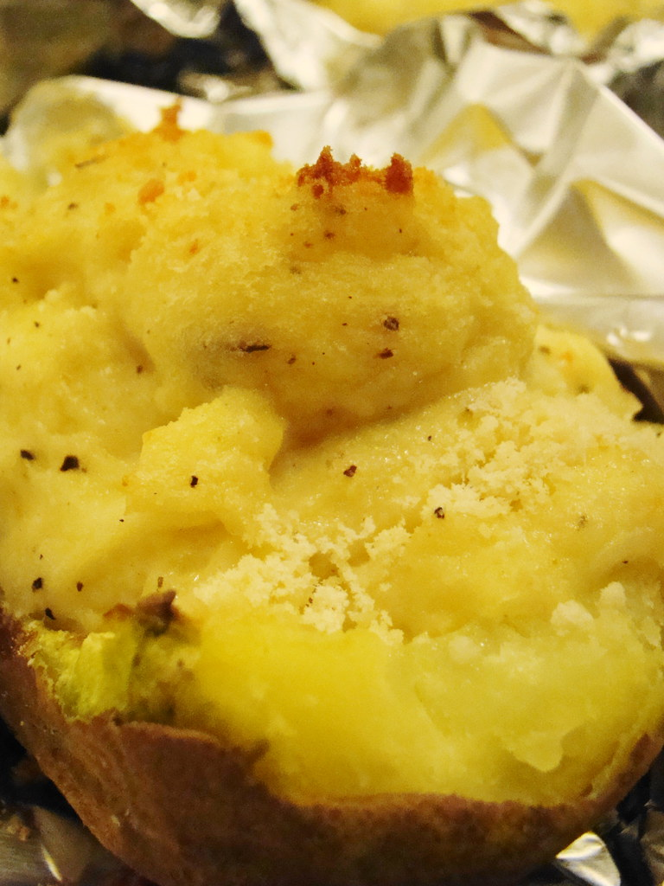

Crispy Baked Potatoes

Description
This is a really indulgent winter warmer - not necessarily very healthy, but definitely cheap and delicious!
Although this takes several hours, the actual working time if very limited. This is something you can set to cook while you carry on with your life.
I generally use mature cheddar, but this is also delicious with other cheeses so feel free to play around with what tickles your fancy!
Ingredients
- Large baking potatoes - 4
- Grated mature cheddar cheese - 300g
- Olive oil - a couple of tablespoons
- Large-grained sea salt - a couple of pinches
Instructions
- Heat the oven to 200C.
- Rinse and dry the potatoes. Rub with olive oil all over and sprinkle over the sea salt so it sticks all over.
- Put the potatoes directly in the middle of the oven. Cook for one hour, turn over and cook for another hour. The skin should be dark and crispy, but not burnt.
- Remove the potatoes from the oven (but don't turn off the oven yet!)
- While still hot, cut the potatoes in half length ways and scoop the flesh into a large bowl. Arrange the skin cups on a baking tray.
- Add most of the grated cheddar to the potato flesh and mash well - keep going until it is smooth and creamy. If it is too stodgy and thick, add a little butter to loosen it up.
- Scoop the cheesy mash back into the skin cups.
- Sprinkle over the remaining cheese.
- Put the baking tray with the halved potatoes back into the middle of the oven and cook for another 30 minutes - until the cheese on top is golden and crispy.
- Enjoy with your favourite green salad.